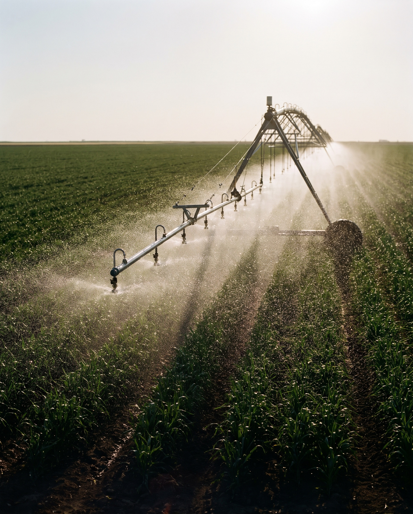

Domov / O nas
Vse naenem mestu.
Vodnogospodarski biro Maribor. Projektivno podjetje za vodno gospodarstvo, nizke gradnje in ekologijo.
Nekoč in danes
Začeli smo kot projektni biro v okviru Vodnogospodarskega podjetja Maribor, ki se je ukvarjal izključno s projektiranjem urejanja voda, vodnih virov in hidromelioracij.
Danes izdelujemo raznovrstno projektno dokumentacijo na področju vodnega gospodarstva. Na osnovi lastnega znanja in v sodelovanju s specializiranimi institucijami rešujemo vse vrste problemov s področja nizkih gradenj in ekologije: od iskanja idej in idejno-tehničnih rešitev do projektne in tehnične dokumentacije.
Vpis v sodni register in v imenik projektivnih podjetij pod številko 0866.
Samostojno podjetje, prej delovna enota in TOZD v VGP Maribor.
Delniška družba.
Družba z omejeno odgovornostjo. Evidenca raziskovalnih organizacij pri ARRS pod številko 0274.
Vodstvo
Ekipa
Osebna izkaznica
Člani Inženirske zbornice Slovenije, Društva vodarjev Slovenije, Slovenskega društva za namakanje in odvodnjo, Društva za visoke pregrade (SLOCOLD), Društva gradbenih inženirjev in tehnikov Maribor ter Društva geodetov severovzhodne Slovenije.